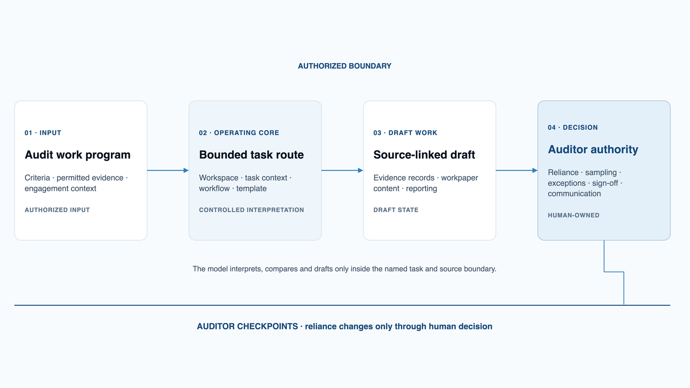
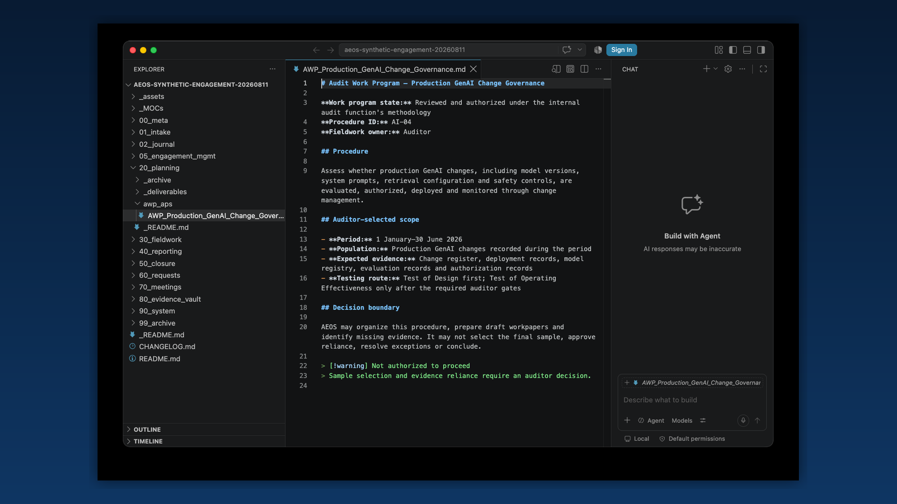

Give the engagement a shared operating structure.
AEOS gives the auditor and AI one visible place for context, source boundaries, procedures, evidence, draft outputs and review decisions.
AI-Augmented Engagement Operating System
AEOS is a file-based operating system for auditors working with AI. It turns an audit work program (AWP) into a controlled route for evidence, testing, workpapers and reporting drafts without losing the audit trail. It is independently developed and under evaluation; it has not been externally validated and is not production-ready.
AEOS in 30 seconds
AEOS gives the auditor and AI one visible place for context, source boundaries, procedures, evidence, draft outputs and review decisions.
It covers fieldwork preparation, meetings, evidence handling, assessment of control design and implementation, operating-effectiveness testing where applicable, quality review and reporting drafts.
AEOS prepares structured drafts, keeps source links and open gaps visible, and applies consistent routes and review points across comparable work.
The professional concepts draw on public audit guidance. The workflow stages, labels and workspace structure shown here are AEOS design choices, not an IIA-prescribed methodology.
How it works
The components have distinct jobs. The workspace holds the engagement, the task context sets the professional and file boundaries, the governed workflow controls the task, and the auditor authorizes each reliance decision.
Engagement inputs flow through the governed operating core into draft audit work, while human decisions retain reliance and communication authority.
Engagement inputs
Governed operating core
Draft audit work
Human decisions
The model can interpret, compare, test and draft within the authorized boundary. It cannot expand scope, approve reliance or communicate a result on its own.
How AEOS supports the auditor
AEOS takes on repeatable preparation, organization, comparison and drafting tasks. This is intended to improve quality, consistency and efficiency. The auditor still decides what the evidence means and whether the work may move forward.
What AEOS supports
Capabilities describe the work the auditor can perform. They are different from the files and components that make the work possible.
Register the AWP, criteria, source set, file boundaries and working folders.
Create workpaper scaffolds, walkthrough agendas, evidence requests and a fieldwork plan.
Perform the planned procedure against authorized evidence and record gaps or contradictions.
Prepare the population and sample for approval, then test each item and attribute against the expected evidence.
Review design-and-implementation work and operating-effectiveness work separately, verify corrections and merge only approved changes.
Draft progress and reporting material, then review reusable and engagement-specific lessons.

See AEOS in action
These four screenshots are literal captures of the AEOS demonstration workspace open in Obsidian and Visual Studio Code. They show the product's real operating environment without reproducing employer, client or operational implementation material. Select any image to open it at full size.
Obsidian

Visual Studio Code

Visual Studio Code

Obsidian

What AEOS includes
AEOS runs in Visual Studio Code and Obsidian. There is no separate backend. The product is the configured workspace and the governed routes inside it.
| Component | Job | Relationship |
|---|---|---|
| Engagement workspace | Holds context, plans, evidence references, workpapers, reviews and reporting drafts. | The shared environment used by every other component. |
| Task contexts | Set the professional perspective and operating boundaries for the selected task. | A person selects the context before invoking a workflow. |
| Governed workflows | Define the inputs, sequence, checks, stop conditions and output for a specific audit task. | The selected context runs one workflow against the authorized source set. |
| Workflow launch controls | Give the auditor a repeatable way to start each supported route. | They call the owning workflow; they do not create a competing process. |
| Templates and guides | Provide readable output structures and operator instructions. | Workflows use the templates; auditors use the guides and review the result. |
| Evidence and review controls | Track sources, provenance, draft state, corrections, gaps and human approvals. | They sit across every route and prevent draft output from becoming silent authority. |
| Python checks | Validate structure, paths, packaging and other deterministic properties. | They support the workflow but do not decide audit evidence or conclusions. |

What must work in practice
Producing a convincing paragraph is easy. The difficult part is controlling how it was produced: which documents the AI was allowed to use, what each statement is based on, what evidence is still missing and which decisions only the auditor may make. The points below separate what already exists in AEOS from what still needs further work.
Scope and authority
Requirements
The workspace remains readable and portable. Native originals stay linked and authoritative, while information used by AEOS agents and workflows is provided in reviewed Markdown working copies.
AEOS supports defined provider routes rather than generic model independence. The auditor chooses an approved route, then selects a model with the context, source-mapping, structured-output and file-tool capability required for the task.
Common questions
AEOS
{kind=link}